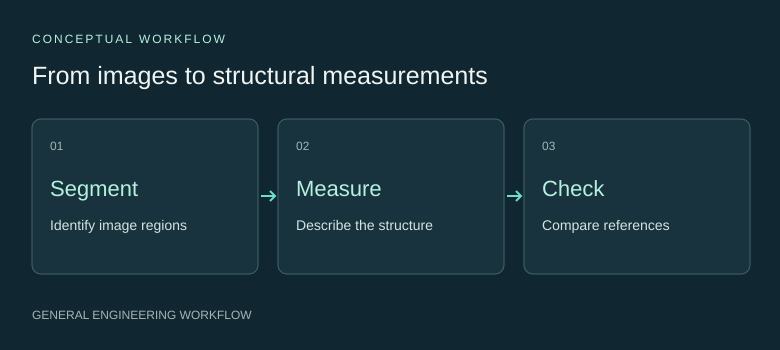

3D imaging & structural analysis
Segmentation and quantitative structure analysis, with attention to image representation and measurement reliability.
Make useful measurements from images.
Image-based structure analysis connects a visual representation with quantitative measurements. Acquisition, discretisation and segmentation choices all need to be considered when planning that analysis.
My doctoral work involved controlled image representations and reference-based assessment of structural measurements.
Build an inspectable analysis pipeline.

My implementation
I developed Python workflows for processing three-dimensional image volumes, segmenting voxel data and calculating porosity, orientation and connectivity descriptors.
- Organise image volumes and their processing settings.
- Extract structural measurements from segmented representations.
- Compare measurements with reference information and examine sensitivity to representation.
Assess each measurement for its purpose.
I use matched reference comparisons, parameter sensitivity and explicit descriptor definitions to assess an analysis method. The relevant question is whether the measurement is suitable for the task that follows.
Configuration records, deterministic processing and resumable stages help make the computational workflow inspectable and repeatable.
Connect imaging with scientific computation.
This work developed my skills in three-dimensional data handling, segmentation-aware analysis and reproducible pipelines. It supports measurement planning, algorithm evaluation and communication between imaging and modelling tasks.
Explore reproducible analysis ↗Research Disclosure
Detailed research findings are currently restricted. This portfolio provides a high-level overview of the work, focusing on the methodologies, technical capabilities and potential engineering applications.